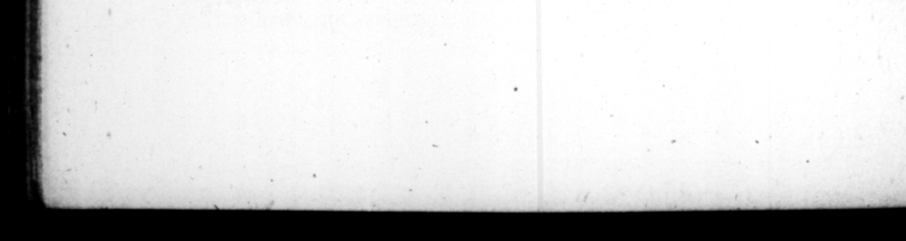

2 2 * #4 214 rent, præcipĩitatum ue in flumen, ſicut veſtitus advenerat. Atque ex eo nun non in ſenatu noviſſimus conſulaium ſententiam dixit, ignominiæ cauſa poſt omnes interrogatus. Etiam cognitio ſalſi teſtamenti recepta eſt, in quo & ipſe ſignaverat. Poſtremo et iam ſeſtertium octo= pro introim novi ſacerotii coactus impendere, ad eas re: familiaris anguſtias decidit, ut cum obligatam ærario fidem liherare non poſſet, in vacuum lege prædiatoria venalis pependerit ſub edicto præfectorum. | 10. Per hc ac talia, maxima ætatis parte tranſacta, quinquageſimo anno Imperinm cepit quantumvis miraLili caſu. Excluſus inter cæteros ab inſidjatoribus Caji, cum quaſi ſecretum eo deſiderante turbam ſubmoverent, in diætam, cui nomen eſt Hermæum , receſſerat. Neque multo poſt rumore cædis exterritue, prorepſit ad ſolarium proximum : interque prætenra foritus vela ſe abdidir : latentem diſcurrens forte grerius miles animadverſis pedibus è ſtudio ſciſcitandi quiſ nam eſſet, agnovit, extractumque, & piz metu ad genua ſibi accidentem, I MP RATOREM ſalutavit. Hinc ad alios commilitones Aluctuantes, nec quidquam adhuc quam frementes perduxit. Ab his lectica? impoſirus, & quia fervi diffugerant, viciſſim ſuccollantibus, in caſtra delatus eit, triſtis ag trepidus , miſerante obvia turba, quaſi ad pœnam raperetur inſons. Receptus intra vallum, inter exculias militum pernoctavit, aliqvanto minore ſpe quam hdricia, Nam conſules cum ſenatu & cohortibus nrhanis rormm Capitoliumque occupa* 5 » * cd sU RET. TRANQ. he was thrown into 4 river in bit ua: velling habit, juſt as be came, And ever after that time, be ſpoke in the ſe. nate always the laſt of all the conſulay gentlemen, being called upon after the ref} on purpoſe to diſgrate him.” "Au indit ment too for forging a will was allowed to be — tho be had figwd it as 4 witneſs, At 7 being iged to pay eight millions of ſeſterces for his enterance upon 4 new office of trie dt hood conferred upon him, be was reduced to thoſe difficulties, for want of ability to diſcharge his obligation to the treaſury, that his whole eftate, according to the law in that caſe provided, was expoſed to ſale by an cditt of the commiſſioners, 10. Having ſpent the greateſt part of his life — theſe oe he the cit. cumſtances, Yo * at 2 to the 7 fire in the fiftieth year of his a ge, 4 very ES turn of Hat Being among ft others not ſuffered by the conſpirators. to come near the emperour, under pretence of bu deſiring to be pri. vate, be retired into an apartment cal. led the Hermeum : and ſoon after being affrighted with the rumour of being ſlam, he crept into a balcony cloſe by it, and hid himſelf behind the anging, of the door. As be load there, a common ſoldier, that came by chance that way, ſpying his feet, and deſirous to diſcover who he was, knew him, and pulled him out, in a great fright, falling at his feet ; and ſaluted him by the title of Emperir. After thu, he brought him out to his fellow-ſoldiers, all in great rage and uncertainty what to do. They put him in a chair, and becauſe the ſlaves of the palace were all run away, took their turns of carrying him, and brought him into the camp, very melancholy, and in great conſlernation ; the people that met him lamenting Ins caſe, as if the poor innocent Was carrying away to execution, Bei received within the ramparts he continued all night with the watch, well recovered from his fright, but in no great hopes of the ſucceſſion. For the conſuls with the ſenate and city bat tations, had prſſeſſed themſelves of the ruit,
